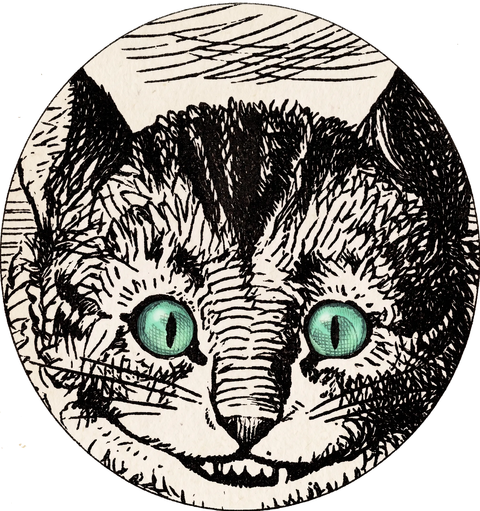

down the
Rabbit Hole
you go...
Alice in Wonderland
Wonderland
The Great Gatsby
Gatsby
The Little Prince
Little Prince
Letters to a Young Poet
Young Poet
Select a book
Drink Me
Eat Me

∙ a daily curiosity ∙
Down the
Rabbit Hole
◆
Drink Me
One line from the looking glass
Stay for tea.
∙ or pour by mood ∙
∙ today's sips ∙
Click to return
— Lewis Carroll
Another sip
Save
Share
∙ saved ∙
∙ shortcuts ∙
Drink Me
R
Eat Me
E
Save quote
S
Toggle music
M
Tea Ceremony
T
Bottle picker
B
Close overlay
Esc
This card
?
press ? or esc to close
∙ pour by mood ∙
press b or esc to close
Click to return
∙ esc or click to return ∙